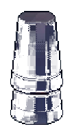

사운드 1
사운드 2
☰ 설정
ESC
00:00
TUTORIAL
쉐이크
1 / 2
실제 화면 예시 · 조작하지 않아도 됩니다
안내를 읽는 동안 제조 시간과 점수는 변하지 않습니다
이전
다음 ·
E
SINGLE GIMMICK / RESULT

-
0
/ 100
같은 기믹 다시 하기
다른 기믹 고르기
영업 시작 화면
☰
설정
✕
사운드
›
게임 설정
조작 안내
음악 음량
배경 음악의 크기를 조절합니다.
효과음 음량
UI · 상호작용 · 제조 효과음
거리 환경음
도시의 소음과 빗소리
대사 출력음
글자가 나타날 때 재생되는 소리
낮고 부드러운 음
맑은 전자음
타자기 소리
끄기
배경 음악
장소별 음악 재생
켜짐
제조 효과음
따르기 · 병따기 · 믹스 · 쉐이킹
켜짐
판정 난이도
재료 방울 크기
쉬움 · 제한 시간 +25%
보통
어려움 · 제한 시간 −20%
타이밍 가이드
쉐이커 속 얼음 위치 표시
켜짐
화면 흔들림
크랙 · 틴 빠짐 반동 연출
켜짐
크랙 효과음
상단 사운드 1 / 2 탭과 같음
사운드 1 · 두꺼운 틴
사운드 2 · 얇은 틴 (울림 김)
A
틴 닫기. 기울기 바늘이 금색일 때 눌러 작은 틴을 밀어 넣는다('쩍'). 잘 닫을수록 허용 MISS가 늘어난다.
A → D
강조된 키를 순서대로, 캡슐 게이지가 다 닳기 전에. 1회 완성마다 진행 바 한 칸.
A→D→A→D
위스키 사워는 두 번 왕복하는 회차가 섞여 나온다 (제한 시간도 두 배).
MISS
순서가 틀리거나 시간이 끝나면 빨간 칸. 허용 MISS를 넘기면 틴이 빠진다.
E
튜토리얼 다음 · 확인
ESC
설정 열기 / 닫기 (일시정지)
이 항목 초기화
기믹 선택으로
돌아가기
Esc